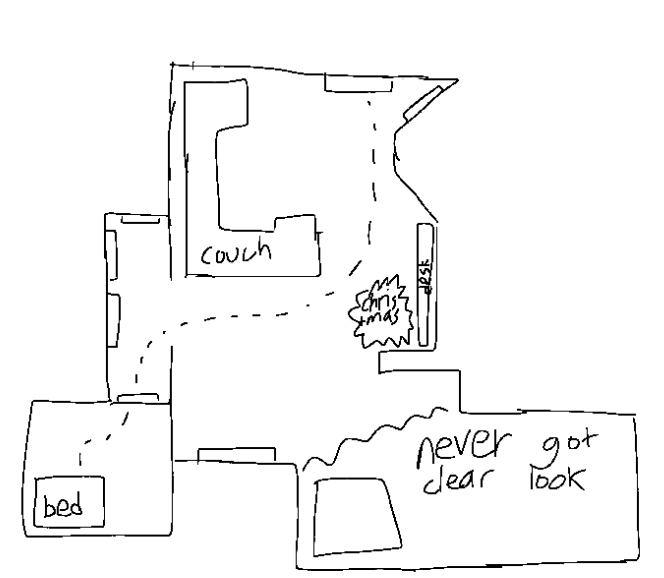
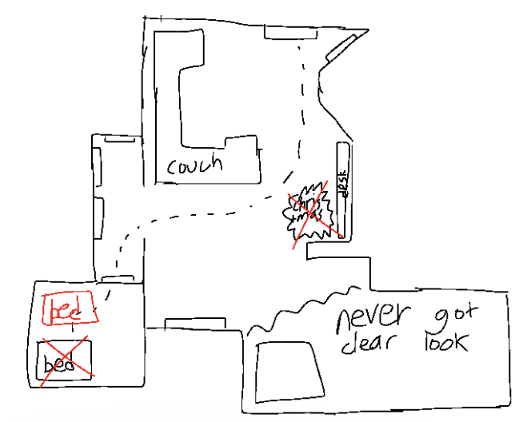

footsteps (???)
I wake up from my bed, and look around my room.
Everything seems weirdly far away, yet at the same distance as everything is in my room.
I exit my room, and enter the living room.
This house looks exactly like my house.
It looks real, it feels real, I can even hear my breath and my footsteps.
I notice that the sliding door to go outside looks weirdly far away, and I try to count my footsteps as I go towards it, to see if it is truly that far away.
I take steps towards the desk, turn left, pass the couch on my left, and I'm at the sliding door.
I realize that the amount of footsteps is way too little for the amount of space I felt like I've travelled, so I try to go back to my room, counting my footsteps.
I pass the couch on my right, run into a Christmas tree in the corner of the room, turn right, and enter into the hallway connected to my room.
Schematic:

I then return to my bedroom, and get in bed, before having a crisis about the amount of distance a footstep even is.
So, I get back up, and try to recount the amount of footsteps from my room to the door.
I end up realizing that I should be counting in thousands, just to be safe and make sure it is as far away as I think it is.
So, I quickly make it into the millions of footsteps between my room and the door, and I start getting an existential crisis.
How long have I truly been here, counting footsteps?
How much distance am I really going?
I start to panic, running between each destination, not counting footsteps anymore.
The amount of distance stays exactly the same, but I can't shake the feeling that I'm traveling more distance than I actually am.
I keep going, and going, and going, running back and forth, attempting to vaguely get an idea of my own home, counting how long I'm running back and forth.
Hours, days?
I reach a billion footsteps, but I still cannot believe the amount of distance between my room and the door.
It feels alien to me, it's an unbelievable amount of distance.
I continue, back and forth, back and forth, stupendously reaching a billion trillion steps, because each footstep is an atom, and I'm counting by thousands.
Then I realize that the door is infinitely far away, and I'm never able to reach the door ever again.
Then I actually wake up, and I get up to look around, bewildered at that dream.
The actual schematic of my house is as follows:

I couldn't fall back asleep for hours.